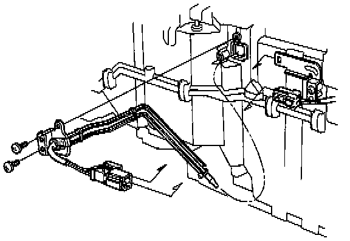

Operation CHARM
: Car repair manuals for everyone.
Home
>>
Acura
>>
1991
>>
Legend Sedan V6-3206cc 3.2L SOHC FI
>>
Repair and Diagnosis
>>
Heating and Air Conditioning
>>
Evaporator Temperature Sensor / Switch
>>
Service and Repair
>>
Manual Heating and Air Conditioning
Manual Heating and Air Conditioning
REPLACEMENT

1.
Disconnect the evaporator temperature sensor connector.
Remove the evaporator temperature sensor by removing the clips and screws.